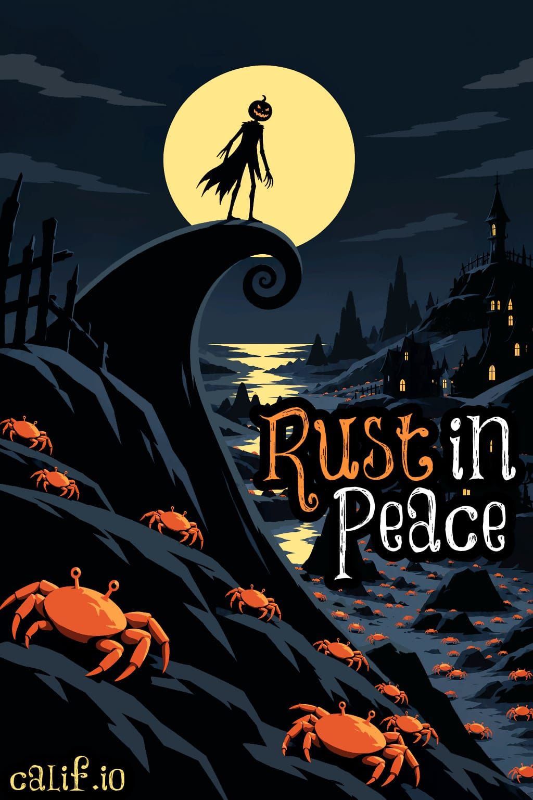
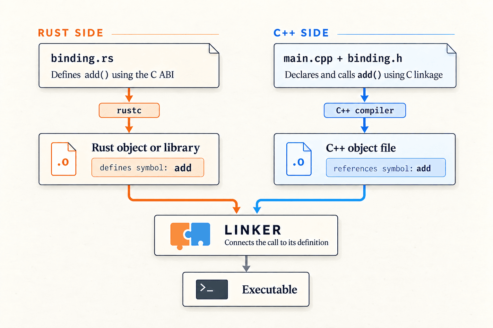
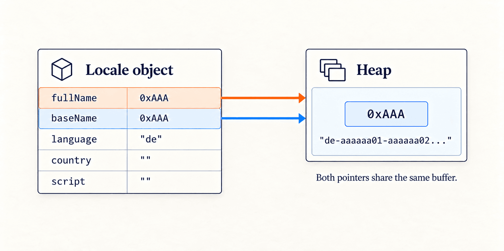
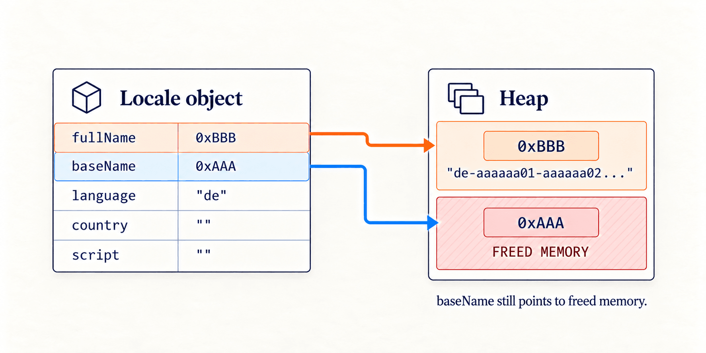

Rust trong bình yên
Bản dịch tiếng Việt của bài gốc Rust in Peace trên Calif — bản quyền thuộc tác giả/Calif. Bài dịch chỉ nhằm mục đích chia sẻ kỹ thuật; mọi quyền đối với nội dung gốc thuộc về Calif.
TL;DR
- Viết lại toàn bộ C++ sang Rust thường không khả thi; Calif đề xuất thay thế có chọn lọc các thành phần dễ lỗi memory-safety bằng Rust, giữ phần còn lại bằng C/C++.
- Cần cầu nối interop để C++ gọi Rust; binding viết tay nhanh phức tạp vì ownership và kiểu khác nhau — các công cụ như cxx, bindgen, Diplomat, Crubit tự động hóa phần lớn việc này.
- Demo ICU4C cũ lộ CVE-2021-30535 use-after-free; thay bằng ICU4X Rust qua Crubit thì cùng kịch bản collation chạy ổn.
- Crubit + Corrosion sinh binding C++ từ API Rust mỏng; vẫn còn
unsafeở ranh giới — binding và mã hỗ trợ vẫn cần review/test. - Chi phí gọi qua Crubit khoảng 1,0–2,4% chậm hơn gọi Rust trực tiếp theo benchmark của bài; memory safety chỉ là một phần phòng thủ rộng hơn.

Ba chế độ đọc: dùng 3 nút tròn ở góc dưới bên phải để chuyển nhanh (trên điện thoại, ba nút nằm thành một thanh ở cuối màn hình để không đè chữ bên phải). VI — bản dịch tiếng Việt đầy đủ, theo từng đoạn. EN — bản gốc tiếng Anh, không tách cụm. Cụm (mặc định, biểu tượng A gạch dưới) — tiếng Anh tách thành các cụm theo mệnh đề; rê chuột hoặc chạm vào một cụm để xem nghĩa tiếng Việt. Chạm lần nữa hoặc chạm ra ngoài để đóng; với cụm chứa liên kết, trên điện thoại chạm lần đầu để xem nghĩa, chạm lần hai để mở liên kết. Chế độ được ghi nhớ trên máy này; có thể mở thẳng bằng ?mode=vi, ?mode=en hoặc ?mode=chunk.
Thay thế các thành phần C++ dễ bị tổn thương bằng Rust, từng binding một.
Replacing vulnerable C++ components with Rust, one binding at a time.
Replacing vulnerable C++ components with Rust, one binding at a time.
Tại Calif, chúng tôi dành nhiều thời gian nghiên cứu bảo mật tấn công trên phần mềm và phần cứng. Nếu đã theo dõi các bài gần đây, bạn đã thấy công việc đó trong thực tế. Điều chúng tôi ít nói hơn là cách hoạt động khai thác (exploitation) giúp hiểu sâu hơn nguyên nhân tấn công thành công và biện pháp phòng thủ nào hiệu quả. Từ đó, chúng tôi xây dựng chiến lược ngăn ngừa và giảm thiểu lỗi bảo mật trong các mảng như:
At Calif, we spend a lot of time researching offensive security across software and hardware. What we talk about less is how exploitation work deepens our understanding of what makes attacks succeed and which defenses actually stop them—shaping defensive work across:
At Calif, we spend a lot of time researching offensive security across software and hardware. What we talk about less is how exploitation work deepens our understanding of what makes attacks succeed and which defenses actually stop them—shaping defensive work across:
- Binding an toàn bộ nhớ (memory-safe bindings)Memory-safe bindingsMemory-safe bindings
- Các biện pháp giảm thiểu (mitigations)MitigationsMitigations
- SandboxingSandboxingSandboxing
- Củng cố chuỗi cung ứng bên thứ ba (third-party supply chain hardening)Third-party supply chain hardeningThird-party supply chain hardening
Bài viết này mở đầu chuỗi chia sẻ những gì chúng tôi học được, bắt đầu từ memory-safe bindings: cách dùng công cụ interop để hỗ trợ đưa Rust vào mã C++.
This post kicks off a series sharing those lessons, starting with memory-safe bindings: using interop tooling to migrate vulnerable C++ to Rust.
This post kicks off a series sharing those lessons, starting with memory-safe bindings: using interop tooling to migrate vulnerable C++ to Rust.
Bối cảnh
Background
Background
Do các vấn đề an toàn bộ nhớ trong C/C++, nhiều công ty nghĩ tới viết lại toàn bộ codebase bằng Rust — nhưng điều đó thường bất khả thi với hệ thống production đang thay đổi liên tục. Cách dễ quản lý hơn là viết lại có chọn lọc các thành phần rủi ro cao bằng Rust và giữ phần còn lại bằng C/C++, thông qua cầu nối interop.
Because of memory-safety bugs in C/C++, full Rust rewrites are tempting yet rarely practical for fast-moving production systems. A manageable path is selectively rewriting critical, vulnerable components in Rust while keeping the rest in C/C++ via interop.
Because of memory-safety bugs in C/C++, full Rust rewrites are tempting yet rarely practical for fast-moving production systems. A manageable path is selectively rewriting critical, vulnerable components in Rust while keeping the rest in C/C++ via interop.
Binding viết tay nhanh chóng rối khi ranh giới mở rộng vì C++ và Rust quản lý ownership khác nhau. Các công cụ như cxx, bindgen, Diplomat và Crubit tự động hóa phần lớn việc sinh cầu nối; trong bài này chúng tôi minh họa bằng Crubit.
Handwritten bindings quickly become brittle as ownership models diverge. Interop tools like cxx, bindgen, Diplomat, and Crubit automate the bridge; here we demonstrate Crubit.
Handwritten bindings quickly become brittle as ownership models diverge. Interop tools like cxx, bindgen, Diplomat, and Crubit automate the bridge; here we demonstrate Crubit.
Crubit sinh header C++ và mã cầu nối cho các hàm public của thư viện Rust; với kiểu Rust chưa được hỗ trợ thẳng, một lớp bọc mỏng sẽ phơi bày API qua các chữ ký mà Crubit hiểu.
Crubit generates C++ headers and glue code for public Rust APIs; when a Rust type lacks direct mapping, a thin wrapper exposes Crubit-friendly signatures.
Crubit generates C++ headers and glue code for public Rust APIs; when a Rust type lacks direct mapping, a thin wrapper exposes Crubit-friendly signatures.
C++ gọi Rust như thế nào
How C++ calls Rust
How C++ calls Rust
Ví dụ cơ bản: một crate Rust foo phơi bày hàm add qua giao diện tương thích C, khai báo trong header rồi liên kết vào ứng dụng C++.
Take a simple example: a Rust crate foo exposes add over a C-compatible interface, declared in a header and linked into a C++ app.
Take a simple example: a Rust crate foo exposes add over a C-compatible interface, declared in a header and linked into a C++ app.
/// binding.rs
#[unsafe(no_mangle)]
pub extern "C" fn add(a: i32, b: i32) -> i32 {
foo::add(a, b)
}extern "C" chỉ định quy ước gọi C và #[unsafe(no_mangle)] giữ nguyên tên symbol add cho linker, kèm khai báo trong header C++:
extern "C" sets the C calling convention and #[unsafe(no_mangle)] preserves the add symbol for the linker, paired with a C++ header:
extern "C" sets the C calling convention and #[unsafe(no_mangle)] preserves the add symbol for the linker, paired with a C++ header:
// binding.h
#include <stdint.h>
extern "C" int32_t add(int32_t a, int32_t b);Cuối cùng, mã C++ gọi hàm qua header đó:
Finally, application code calls it via that header:
Finally, application code calls it via that header:
// main.cpp
#include "binding.h"
int main(void) {
add(2, 3);
}Trình biên dịch C++ kiểm tra chữ ký từ binding.h, rồi linker ghép object file C++ với thư viện Rust thành một file thực thi duy nhất.
The C++ compiler checks the signature from binding.h, and the linker combines the C++ object file with the compiled Rust library into one executable.
The C++ compiler checks the signature from binding.h, and the linker combines the C++ object file with the compiled Rust library into one executable.

Ví dụ với ICU4C
Example with ICU4C
Example with ICU4C
Chúng tôi dựng ứng dụng C++ nhỏ sắp xếp tên theo locale (mã nguồn demo) với hai bản: một bản dùng ICU4C cũ dính lỗi use-after-free (CVE-2021-30535), bản kia dùng ICU4X bằng Rust qua Crubit.
We built a small locale-collation C++ demo (source) in two versions: one on a vulnerable ICU4C with use-after-free (CVE-2021-30535), and one on Rust's ICU4X via Crubit.
We built a small locale-collation C++ demo (source) in two versions: one on a vulnerable ICU4C with use-after-free (CVE-2021-30535), and one on Rust's ICU4X via Crubit.
Khi chạy bản ICU4C, AddressSanitizer lập tức bắt được lỗi đọc bộ nhớ đã giải phóng (UAF):
Running the ICU4C build triggers AddressSanitizer with a heap-use-after-free:
Running the ICU4C build triggers AddressSanitizer with a heap-use-after-free:
% ./build/icu4c-demo --cve
=================================================================
==40228==ERROR: AddressSanitizer: heap-use-after-free on address 0x60f000000220 at pc 0x00010287671c bp 0x00016f9f5a90 sp 0x00016f9f5260
READ of size 2 at 0x60f000000220 thread T0
#0 0x000102876718 in strlen+0x22c (libclang_rt.asan_osx_dynamic.dylib:arm64e+0x16718)
#1 0x0001004dd988 in uprv_strdup_66+0x10 (icu4c-demo:arm64+0x1000d5988)
#2 0x0001004a9950 in icu_66::Locale::operator=(icu_66::Locale const&)+0x1d0 (icu4c-demo:arm64+0x1000a1950)
#3 0x0001004a9be4 in icu_66::Locale::Locale(icu_66::Locale const&)+0x64 (icu4c-demo:arm64+0x1000a1be4)
#4 0x000100420328 in icu_66::CollationLoader::getCacheEntry(UErrorCode&)+0x104 (icu4c-demo:arm64+0x100018328)
#5 0x0001004200b8 in icu_66::CollationLoader::loadTailoring(icu_66::Locale const&, UErrorCode&)+0x194 (icu4c-demo:arm64+0x1000180b8)
#6 0x000100415c90 in icu_66::Collator::makeInstance(icu_66::Locale const&, UErrorCode&)+0x24 (icu4c-demo:arm64+0x10000dc90)
#7 0x00010041603c in icu_66::Collator::createInstance(icu_66::Locale const&, UErrorCode&)+0x28c (icu4c-demo:arm64+0x10000e03c)
#8 0x0001004096b8 in main main.cc:20
#9 0x0001849cc4e0 in start+0x1b4c (dyld:arm64e+0x204e0)ICU4X tránh được lỗi ownership này nhờ lưu language identifier và extension trong cấu trúc sở hữu rõ ràng thay vì giữ cặp con trỏ đồng bộ thủ công — nên bản thứ hai chạy bình thường:
ICU4X avoids this ownership bug by storing language identifiers and extensions as owned structured fields rather than manually synced pointers, so the second build runs cleanly:
ICU4X avoids this ownership bug by storing language identifiers and extensions as owned structured fields rather than manually synced pointers, so the second build runs cleanly:
% ./build/icu4x-demo --cve
Andersson
Meyer
Mueller
Müller
Özil
ZimmermannDùng Crubit để dựng cầu nối
Building the bridge with Crubit
Building the bridge with Crubit
Nếu viết tay giao diện C (ví dụ thủ công), chỉ riêng ba hàm create/compare/destroy đã tốn rất nhiều mã bọc con trỏ, slice và quản lý vòng đời phía C++:
Writing a C ABI bridge by hand (manual example) already demands heavy pointer, slice, and C++ RAII boilerplate for just three functions:
Writing a C ABI bridge by hand (manual example) already demands heavy pointer, slice, and C++ RAII boilerplate for just three functions:
typedef struct ManualCollatorHandle ManualCollatorHandle;
uint8_t manual_collator_create(
const uint8_t* locale, size_t len,
ManualCollatorHandle** out);
int32_t manual_collator_compare(
const ManualCollatorHandle* collator,
const uint8_t* left, size_t left_len,
const uint8_t* right, size_t right_len);
void manual_collator_destroy(ManualCollatorHandle* collator);Với Crubit, vì API gốc của ICU4X dùng alias trait ZeroFrom chưa được hỗ trợ, ta chỉ cần bọc một struct Collator mỏng phơi bày đúng hai thao tác cần dùng:
With Crubit, because ICU4X's raw API uses an unsupported ZeroFrom trait alias, wrapping it in a tiny Collator struct exposing just the needed methods makes binding generation work cleanly:
With Crubit, because ICU4X's raw API uses an unsupported ZeroFrom trait alias, wrapping it in a tiny Collator struct exposing just the needed methods makes binding generation work cleanly:
pub struct Collator {
inner: CollatorBorrowed<'static>,
}
impl Collator {
pub fn new(locale: &[u8]) -> Result<Self, u8> {
let locale = Locale::try_from_utf8(locale).map_err(|_| 1u8)?;
let inner = CollatorBorrowed::try_new(locale.into(), Default::default())
.map_err(|_| 2u8)?;
Ok(Self { inner })
}
pub fn compare_utf8(&self, left: &[u8], right: &[u8]) -> i32 {
match self.inner.compare_utf8(left, right) {
std::cmp::Ordering::Less => -1,
std::cmp::Ordering::Equal => 0,
std::cmp::Ordering::Greater => 1,
}
}
}Sau đó nối vào CMake qua Corrosion bằng corrosion_experimental_crubit() và corrosion_import_crate() để sinh header C++ collation.h và build tự động:
Next, hook it into CMake via Corrosion using corrosion_experimental_crubit() and corrosion_import_crate() to generate collation.h and build automatically:
Next, hook it into CMake via Corrosion using corrosion_experimental_crubit() and corrosion_import_crate() to generate collation.h and build automatically:
include(FetchContent)
FetchContent_Declare(Crubit SOURCE_DIR "${CRUBIT_SOURCE}")
FetchContent_Declare(Corrosion SOURCE_DIR "${CORROSION_SOURCE}")
FetchContent_MakeAvailable(Corrosion)
# Generate C++ bindings for the Rust crate.
corrosion_experimental_crubit(locale_collator)
corrosion_import_crate(MANIFEST_PATH rust/Cargo.toml LOCKED)
get_target_property(
support_targets crubit_support INTERFACE_LINK_LIBRARIES)
add_dependencies(crubit_support ${support_targets})
# Expose the Rust library and Crubit's support code to C++.
add_library(collation INTERFACE)
target_include_directories(
collation INTERFACE "${CMAKE_CURRENT_SOURCE_DIR}")
target_link_libraries(
collation INTERFACE locale_collator crubit_support)
add_dependencies(collation crubit_support)
add_executable(icu4x-demo main.cc contacts.cc)
target_link_libraries(icu4x-demo PRIVATE collation)Ứng dụng C++ chỉ việc gọi collation::Collator::new_(locale) và collator.compare_utf8(...) như một API C++ tự nhiên:
The C++ app then calls collation::Collator::new_(locale) and collator.compare_utf8(...) naturally:
The C++ app then calls collation::Collator::new_(locale) and collator.compare_utf8(...) naturally:
#include "collation.h"
#include "contacts.h"
#include <algorithm>
#include <exception>
#include <iostream>
#include <stdexcept>
int main(int argc, char** argv) {
try {
auto request = contacts::ParseArguments(
argc, argv, "ICU4X 2.3.1 through Crubit");
if (request.done) return 0;
const auto locale = contacts::ToLanguageTag(request.locale);
auto result = collation::Collator::new_(locale);
if (!result.has_value())
throw std::runtime_error("Invalid or unsupported locale");
const auto& collator = result.value();
std::stable_sort(request.names.begin(), request.names.end(),
[&](const auto& left, const auto& right) {
return collator.compare_utf8(left, right) < 0;
});
contacts::Print(request.names);
return 0;
} catch (const std::exception& error) {
std::cerr << "error: " << error.what() << '\n';
return 1;
}
}Hiểu ranh giới an toàn
Understanding the safety boundary
Understanding the safety boundary
Mã cầu nối do Crubit sinh ra vẫn dùng Rust unsafe ở ranh giới, nên C++ vẫn phải giữ vùng nhớ mượn hợp lệ khi Rust dùng; bản thân mã hỗ trợ của Crubit (như giao diện vector) cũng từng có lỗi OOB/UAF nên vẫn cần review và test kỹ.
Generated Crubit glue uses Rust unsafe at the boundary, meaning C++ must still uphold lifetime invariants—and Crubit's own support code has had vector OOB/UAF bugs, so generated bindings still need review and testing.
Generated Crubit glue uses Rust unsafe at the boundary, meaning C++ must still uphold lifetime invariants—and Crubit's own support code has had vector OOB/UAF bugs, so generated bindings still need review and testing.
Dù vậy, thay thế mã ICU4C dễ lỗi bằng API Rust nhỏ không chứa unsafe và không giữ tham chiếu sau khi trả về vẫn mang lại lợi ích bảo mật rõ rệt (hoặc dùng C FFI sẵn có như rust-brotli khi muốn thay drop-in).
Still, swapping vulnerable ICU4C code for a small unsafe-free Rust API that retains no input references yields clear security wins (and drop-in C FFIs like rust-brotli can reduce integration work even further).
Still, swapping vulnerable ICU4C code for a small unsafe-free Rust API that retains no input references yields clear security wins (and drop-in C FFIs like rust-brotli can reduce integration work even further).
Chi phí hiệu năng
Performance cost
Performance cost
Khi đo so sánh gọi trực tiếp từ Rust với gọi từ C++ qua Crubit trên cùng adapter ICU4X, đường Crubit chỉ chậm hơn khoảng 1,0–2,4% (thêm 0,5–1,3 ns mỗi lần so sánh) — mức đánh đổi rất nhỏ cho lợi ích an toàn bộ nhớ.
Comparing direct Rust calls against C++-through-Crubit on the same ICU4X adapter, Crubit adds only ~1.0–2.4% overhead (0.5–1.3 ns per comparison)—a modest trade-off for memory safety.
Comparing direct Rust calls against C++-through-Crubit on the same ICU4X adapter, Crubit adds only ~1.0–2.4% overhead (0.5–1.3 ns per comparison)—a modest trade-off for memory safety.
Kết luận
Conclusion
Conclusion
Làm ứng dụng C++ an toàn hơn không đòi hỏi viết lại toàn bộ sang Rust: thay thế từng thành phần dễ tổn thương qua các công cụ như Crubit giúp hưởng lợi từ hệ thống kiểu và ownership của Rust với chi phí hiệu năng rất nhỏ, như một lớp trong chiến lược phòng thủ nhiều tầng.
Making a C++ app safer does not require a full Rust rewrite: incrementally replacing vulnerable components via tools like Crubit brings Rust's type system and ownership guarantees at minimal overhead as part of defense-in-depth.
Making a C++ app safer does not require a full Rust rewrite: incrementally replacing vulnerable components via tools like Crubit brings Rust's type system and ownership guarantees at minimal overhead as part of defense-in-depth.
Phụ lục
Appendix
Appendix
Giải thích CVE-2021-30535
Explaining CVE-2021-30535
Explaining CVE-2021-30535
Trong ICU4C cũ, khi không có keyword, hai con trỏ fullName và baseName trỏ chung một heap buffer (Hình 1). Khi Locale::setKeywordValue() thêm keyword dài hơn khiến buffer bị cấp phát lại, dòng 1360 giải phóng buffer cũ và dòng 1362 chỉ cập nhật fullName, bỏ lại baseName trỏ vào vùng nhớ đã giải phóng (Hình 2) — gây đọc use-after-free và double-free lúc hủy.
In vulnerable ICU4C, fullName and baseName share one heap buffer when no keywords exist (Fig. 1). When Locale::setKeywordValue() reallocates for a longer keyword, line 1360 frees the old buffer and line 1362 updates only fullName, leaving baseName dangling (Fig. 2) and causing UAF/double-free on copy or destruction.
In vulnerable ICU4C, fullName and baseName share one heap buffer when no keywords exist (Fig. 1). When Locale::setKeywordValue() reallocates for a longer keyword, line 1360 frees the old buffer and line 1362 updates only fullName, leaving baseName dangling (Fig. 2) and causing UAF/double-free on copy or destruction.

Hai con trỏ chuỗi chia sẻ cùng một heap buffer

Con trỏ baseName bị dangling sau khi tái cấp phát
Know-how & Insight
Ghi chú của người dịch — không phải lời của tác giả
Bài này là playbook di trú dần C++ → Rust thay vì big-bang rewrite. Một số điểm áp dụng được:
- Ưu tiên bề mặt dễ bị tấn công. Không cần Rust hóa cả monolith; chọn thư viện parse, collation, codec, crypto wrapper — nơi UAF/OOB từng xảy ra — rồi giữ caller C++.
- Thu hẹp API trước khi sinh binding. Crubit không cover mọi trait/kiểu Rust; lớp bọc mỏng chỉ phơi thao tác cần thiết giúp binding biên dịch được và giảm mặt tấn công.
- So sánh tay vs tool. Ba hàm create/compare/destroy thủ công đã đủ nặng; mở rộng API thì Crubit/Corrosion đáng hơn để giảm boilerplate và lỗi ownership.
- Ranh giới vẫn unsafe. Memory-safe bên Rust không tự làm an toàn phía C++; review binding sinh ra và thêm test AddressSanitizer / fuzz ở cả hai phía.
- Đo overhead trước khi từ chối. Bài báo ~1–2,4% chậm cho collator qua Crubit — với nhiều đường nóng, con số này chấp nhận được đổi lấy giảm CVE class.
- Kế hoạch phòng thủ tầng. Memory-safe bindings chỉ là lớp đầu; vẫn cần mitigation, sandbox và hardening supply chain như Calif nêu ở đầu bài.
Mindmap
mindmap
root((Rust in Peace))
Bối cảnh
Viết lại toàn bộ kho
Thay thế chọn lọc
C++ gọi Rust
Công cụ interop
cxx
bindgen
Diplomat
Crubit
Ví dụ ICU
ICU4C UAF CVE
ICU4X an toàn hơn
Demo Crubit
Ranh giới an toàn
Vẫn còn unsafe
Review binding
Lỗi vector Crubit
Hiệu năng
Chậm thêm 1–2%
Đổi lấy an toàn
Kết luận
Di trú dần
Memory safety là một lớp